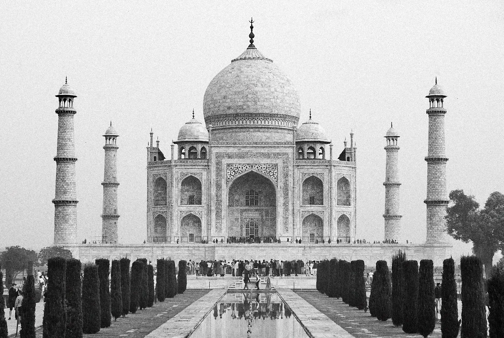

Cultural Preservation Crisis
Heritage Under Threat
Pollution, crowd pressure, careless development, neglect, and cultural loss can erase memory before people notice it is gone.

Damage comparison
The crisis is visible when we look closely
Threats are not abstract. They appear as cracks, stains, missing craft lineages, displaced communities, and traditions that no longer have time or space to continue.